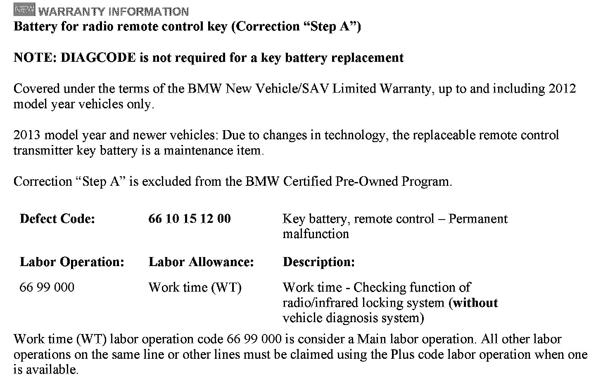
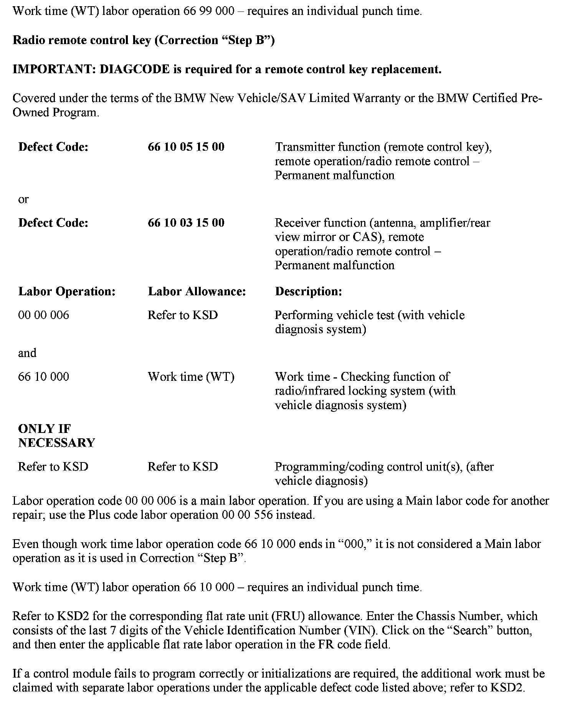
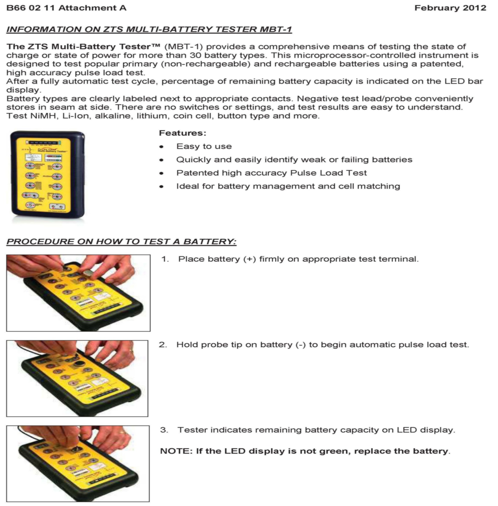

Keyless Sys. - Remote Control And Comfort Access Inop.
SI B66 02 11Distance Systems, Cruise Control, Remote Control
February 2012
Technical Service
This Service Information bulletin supersedes SI B66 02 11 dated August 2011.
[NEW] designates changes to this revision
SUBJECT
[NEW] Remote Control and/or Comfort Access Functionality Is Inoperative
MODEL
All
[NEW] Vehicles with remote control keys that have a replaceable battery
SITUATION
The radio remote control and Comfort Access functionality is inoperative:
^ The vehicle can only be unlocked or locked with the mechanical key.
^ The vehicle can only be started with the remote control key in the slot of the Car Access System (CAS) or when held very closely to the steering column.
CAUSE
[NEW] The replaceable battery in the remote control key is either damaged or depleted.
CORRECTION
Step A:
A defective/depleted battery in the remote control key will mimic that no battery is installed in the remote control key; hence, no check control message will be displayed. This is why it is imperative to test the battery in the remote control key first.
[NEW] Testing showed that even when performing diagnosis and following the test plan for the key battery charge/voltage status check offered in ISTA, a damaged/depleted key battery will not be recognized.
[NEW] As a result, follow the recommendation below without performing a vehicle test:
1. [NEW] Check the battery functionality by removing the original key battery in the key and install a known good key battery; or, even better, use a battery tester called state of charge (e.g., ZTS Multi-Battery Tester MBT-1) to test the key battery capacity
2. [NEW] Retest the functionality of the remote control key.
3. [NEW] When proper functionality is confirmed, replace the key batteries on all assigned remote control keys for the vehicle.
4. [NEW] If proper functionality cannot be restored with a known good key battery, refer to Step B.
Note:
The average life cycle of a battery in the remote control key is approximately 3 years from the day of production of the vehicle.
[NEW] More details on the ZTS Multi-Battery Tester MBT-1 can be found in Attachment_A and on the ZTS manufacturer website, www.ztsinc.com/mbtl.html.
[NEW] Note:
The ZTS Multi-Battery Tester MBT-1 must be purchased through your center (e.g. from Amazon.com, SEARS, etc.). It will not be offered through BMW.
Step B:
Perform diagnosis using ISTA (Integrated Service Technical Application). Complete any test plans related to the radio remote control system.
Note:
If the remote control key must be replaced, swap the existing slide-in (mechanical) key into the new replacement remote control(s).
Important:
If the rearview mirror must be replaced (remote receiver is integrated) on a Convertible, please perform a visual check on the mirror to assure that the frequency of the remote receiver installed in the mirror is 315 MHz.
[NEW] PARTS INFORMATION


[NEW] WARRANTY INFORMATION
ATTACHMENTS

Attachment A - Information on ZTS Multi-Battery Tester MBT-1